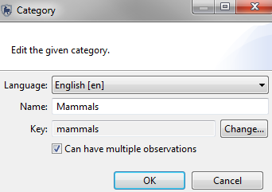
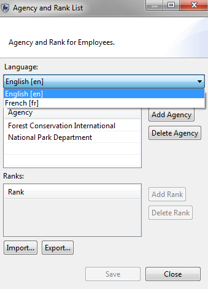
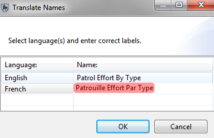

SMART multi-language support can be divided into two main components. The first component is support for translating the core software to have the software display all text, buttons, menus, etc. in the supported language(s). The second component is to provide support for changing data model entries, queries, reports and other user-created text.
Support for multiple languages within SMART for user-created or non-software text is done directly within SMART. The Conservation Area Properties screen is where additional languages can be added to a Conservation Area. Clicking on the Add button will bring up a dialog box to check the additional languages that will be supported by the Conservation Area.
After additional languages have been made available, the translations for the languages still need to take place. The methods for translating the various user-defined information (data model, queries, etc...) are different and will be described in the following sections. The examples will all take place using the alternate language of French.
Data Model
Translation of the data model entries takes place through the Name property of the category or attribute. The name property can be considered an alias with the actual name being the key.
Warning: Do not change the key unless you absolutely know what you are doing and understand what issues will arise from changing the key.
The following workflow applies to categories, attributes and values in trees and lists. Each entry in the data model will require individual translations. For each entry, the user will need to select the category, attribute or value and click Edit.

On the left is the original English entry. To complete the translation, select the alternate language from the pull-down list and type the appropriate translation in the name field.


The default language of English shows the original data model names (see left). After selecting the alternate language of French, the translated entries appear with the new translations.


Translations for Agency and Rank List
Translations for Agency and Rank List follows the same procedure as the data model. Select the alternate language. Enter in the alternate language translations.

Translations for Stations
Translations for Stations follows the same procedure as the data model. Select the alternate language. Enter in the alternate language translations.

Note: Patrol Mandates, Patrol Types, and Patrol Teams all follow the same translation procedure as Stations.
Translations for Basemaps
Translations for basemaps and other SMART components take place through the Rename or Translate function. Select the entry to translate and click the Rename Button.
The Translate Names window opens, showing the supported names. Direct translation of the entry for the alternate languages can take place in this window, without having to previously select the alternate language.


Translations for Queries, Reports, Plans and Intelligence Records
To translate Queries, Reports, Plans or Intelligence Records the user will right click to open up the mouse menu and then select "Translate". A Translate Names window opens; this contains the other supported languages. The following example demonstrates the process using a Query. Translations for Reports, Plans and Intelligence Records all follow the same procedures.


Rather than storing translations inside the main code base, translations are created as Eclipse “plug-in fragments”. The fragments can then be compiled to create a language pack that can be added to an existing installed application without the need to update the entire application.
Language packs can be provided to users via a website, from which users can download only the language pack(s) of interest to them.
This approach makes it much simpler to provide new translations and upgrade existing translations, and provides greater flexibility for users.
Available Language Packs
SMART Dependencies
Translations are no longer included in the default application build. Language packs are provided, which users can install into their version of SMART to support various languages. Language packs are available from the same location as the SMART application.
To install a language pack:
1. Download the required language pack (for example: smart_1.1.1_languagepack_fr.zip).
2. Unzip the contents of the language pack into your SMART install directory.
The language pack contains "plugins" and "features" directories. The contents of these two directories need to be merged with the contents of the smart/features and smart/plugins directories. Make sure you MERGE these directories and delete and replace.